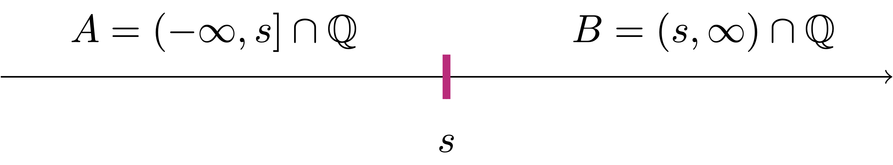

3 Real Numbers
In this chapter we introduce the sysyem of Real Numbers \(\mathbb{R}\).
3.1 Fields
In order to introduce \(\mathbb{R}\), we need the concepts of binary operation and field. We proceed in a general setting, starting from a set \(K\).
Definition 1: Binary operation
Notation 2
There are two main binary operations we are interested in:
- Addition: denoted by \(+\). The addition, or sum of \(x,y \in K\) is denoted by \[ x + y \,. \]
- Multiplication: denoted by \(\cdot\). The multiplication, or product of \(x,y \in K\) is denoted by \[ x \cdot y \,\, \mbox{ or } \,\, xy\,. \]
Example 3: of binary operation
Binary operations take ordered pairs of elements of \(K\) as input. Therefore the operation \[ x \circ y \circ z \] does not make sense, since we do not know which one between \[ x \circ y \,\, \mbox{ or } \,\, y \circ z \] has to be performed first. Also one could have that the outcome of an operation depends on order: \[ x \circ y \neq y \circ x \,. \] This motivates the following definition.
Definition 4
Let \(K\) be a set and \(\circ \ \colon K \times K \to K\) be a binary operation on \(K\). We say that:
- \(\circ\) is commutative if \(\forall \, x,y \in K\) \[ x \circ y = y \circ x \,. \]
- \(\circ\) is associative if \(\forall \, x,y,z \in K\) \[ (x \circ y) \circ z = x \circ (y \circ z) \,. \]
- An element \(e \in K\) is called neutral element of \(\circ\) if \(\forall \, x \in K\) \[ x \circ e = e \circ x = e \,. \]
- Let \(e\) be a neutral element of \(\circ\) and let \(x \in K\). An element \(y \in K\) is called an inverse of \(x\) with respect to \(\circ\) if \[ x \circ y = y \circ x = e \,. \]
Example 5
Let \(K\) with \(+\) and \(\cdot\) be as in Example 3. For the sum we have
- \(+\) is commutative, since \[ 0 + 1 = 1 + 0 = 0 \,. \]
- \(+\) is associative, since for example \[ (0 + 1) + 1 = 1 + 1 = 0 \,, \quad 0 + (1 + 1) = 0 + 0 = 0 \,, \] and therefore \[ (0 + 1) + 1 = 0 + (1 + 1) \,. \] In general one can show that \(+\) is associative by checking all the other permutations.
- The neutral element of \(+\) is \(0\), since \[ 0 + 0 = 0 \,, \quad 1 + 0 = 0 + 1 = 1 \,. \]
- Every element has an inverse. Indeed, the inverse of \(0\) is \(0\), since \[ 0 + 0 = 0\,, \] while the inverse of \(1\) is \(1\), since \[ 1 + 1 = 1 + 1 = 0 \,. \]
For the product we have:
- \(\cdot\) is commutative, since \[ 1 \cdot 0 = 0 \cdot 1 = 0 \,. \]
- \(\cdot\) is associative, since for example \[ (0 \cdot 1) \cdot 1 = 0 \cdot 1 = 0 \,, \quad 0 \cdot (1 \cdot 1) = 0 \cdot 1 = 0 \,, \] and therefore \[ (0 \cdot 1) \cdot 1 = 0 \cdot (1 \cdot 1) \,. \] By checking all the other permutations one can show that \(\cdot\) is associative.
- The neutral element of \(\cdot\) is \(1\), since \[ 0 \cdot 1 = 1 \cdot 0 = 0 \,, \quad 1 \cdot 1 = 1 \,. \]
- The element \(0\) has no inverse, since
\[ 0 \cdot 0 = 0 \cdot 1 = 1 \cdot 0 = 0\,, \] and thus we never obtain the neutral element \(1\). The inverse of \(1\) is given by \(1\), since \[ 1 \cdot 1 = 1 \,. \]
Example 6
We are ready to define fields.
Definition 7: Field
Let \(K\) be a set with binary operations \(+\) and \(\cdot\). We call the triple \((K, + , \cdot)\) a field if:
- The addition \(+\) satisfies:
- (A1) \(+\) is commutative and associative.
- (A2) There exists a neutral element in \(K\) for \(+\). We call this element \(0\).
- (A3) For every \(x \in K\) there exists an inverse \(y \in K\) with respect to \(+\). We call this element the additive inverse of \(x\) and denote it by \(y=-x\).
- The multiplication \(\cdot\) satisfies:
- (M1) \(\cdot\) is commutative and associative.
- (M2) There exists a neutral element in \(K\) for \(\cdot\). We call this element \(1\).
- (M3) For every \(x \in K\) with \(x \neq 0\) there exists an inverse \(y \in K\) with respect to \(\cdot\). We call this element the multiplciative inverse of \(x\) and denote it by \(y=x^{-1}\).
- \(+\) and \(\cdot\) are related by the distributive property:
- (AM) For all \(x,y,z \in K\) we have \[ x \cdot (y + z) = (x \cdot y) + (y \cdot z) \,. \]
Example 8
Let \(K\) with \(+\) and \(\cdot\) be as in Example 3. We can show that \((K,+,\cdot)\) is a field. Indeed we have already shown in Example 5 that:
- (A1) and (M1) hold,
- (A2) holds with neutral element \(0\),
- (M2) holds with neutral element \(1\),
- (A3) every element has an additive inverse, with \[ -0 = 0 \,, \quad - 1 = 1 \,, \]
- (M3) every element which is not \(0\) a multiplicative inverse, with \[ 1^{-1} = 1\,. \]
- (AM) this is left to show: Indeed, for all \(y,z \in K\) we have \[ 0 \cdot (y + z) = 0 \,, \quad (0 \cdot y) + (0 \cdot z) = 0 + 0 = 0\,, \] and also \[ 1 \cdot (y + z) = y + z \,, \quad (1 \cdot y) + (1 \cdot z) = y + z \,. \]
Definition 9: Subtraction and division
Let \((K,+,\cdot)\) be a field. We define:
- Subtraction as the operation \(-\) defined by \[ x - y := x + (-y) \,, \quad \forall \, x , y \in K \,, \] where \(-y\) is the additive inverse of \(y\).
- Division as the operation \(/\) defined by \[ x/y := x \cdot y^{-1}\,, \quad \forall \, x , y \in K \,, \,\, y \neq 0 \,, \] where \(y^{-1}\) is the multiplicative inverse of \(y\).
Proposition 10: Uniqueness of neutral elements and inverses
Let \((K,+,\cdot)\) be a field. Then
- There is a unique element in \(K\) with the property of \(0\),
- There is a unique element in \(K\) with the property of \(1\),
- For all \(x \in K\) there is a unique additive inverse \(-x\),
- For all \(x \in K\), \(x \neq 0\), there is a unique multiplicative inverse \(x^{-1}\).
Proof
- Suppose that \(0 \in K\) and \(\tilde{0} \in K\) are both neutral element of \(+\), that is, they both satisfy (A2). Then \[ 0 + \tilde{0} = 0 \] since \(\tilde{0}\) is a neutral element for \(+\). Moreover \[ \tilde{0} + 0 = \tilde{0} \] since \(0\) is a neutral element for \(+\). By commutativity of \(+\), see property (A1), we have \[ 0 = 0 + \tilde{0} = \tilde{0} + 0 = \tilde{0} \,, \] showing that \(0 = \tilde{0}\). Hence the neutral element for \(+\) is unique.
- Exercise.
- Let \(x \in K\) and suppose that \(y, \tilde{y} \in K\) are both additive inverses of \(x\), that is, they both satisfy (A3). Therefore \[ x + y = 0 \] since \(y\) is an additive inverse of \(x\) and \[ x + \tilde{y} = 0 \] since \(\tilde{y}\) is an additive inverse of \(x\). Therefore we can use commutativity and associativity and of \(+\), see property (A1), and the fact that \(0\) is the neutral element of \(+\), to infer \[\begin{align} y & = y + 0 = y + (x + \tilde{y}) \\ & = (y + x) + \tilde{y} = (x + y) + \tilde{y} \\ & = 0 + \tilde{y} = \tilde{y} \,, \end{align}\] concluding that \(y = \tilde{y}\). Thus there is a unique additive inverse of \(x\), and \[ y = \tilde{y} = -x \,, \] with \(-x\) the element from property (A3).
- Exercise.
Using the properties of field we can also show that the usual properties of sum, subtraction, multiplication and division still hold in any field. We list such properties in the following proposition.
Proposition 11: Properties of field operations
Let \((K,+,\cdot)\) be a field. Then for all \(x,y,z \in K\),
- \(x + y = x + z \,\, \implies \,\, y = z\)
- \(x \cdot y = x \cdot z \,\) and \(\,x \neq 0 \,\, \implies \,\, y = z\)
- \(- 0 = 0\)
- \(1^{-1} = 1\)
- \(x \cdot 0 = 0\)
- \(-1 \cdot x = -x\)
- \(-(-x) = x\)
- \((x^{-1})^{-1} = x \,\) if \(\, x \neq 0\)
- \((x \cdot y)^{-1} = x^{-1} \cdot y^{-1}\)
The above properties can be all proven with elementary use of the field properties (A1)-(A3), (M1)-(M3) and (AM). This is an exercise in patience, and is left to the reader.
Let us conclude with examining the sets of numbers introduced in Chapter 1.
Theorem 12
Consider the sets \(\mathbb{N}\), \(\mathbb{Z}\), \(\mathbb{Q}\) with the usual operations \(+\) and \(\cdot\). We have:
- \((\mathbb{N}, + , \cdot)\) is not a field:
It satisfies properties (A1), (A2), (M1), (M2), (AM) of fields. It is missing properties (A3) and (M3), the additive and multiplicative inverse properties, respectively. - \((\mathbb{Z}, + , \cdot)\) is not a field:
It satisfies properties (A1), (A2), (A3), (M1), (M2), (AM) of fields. Thus it is only missing (M3), the multiplicative inverse property. - \((\mathbb{Q}, + , \cdot)\) is a field.
The proof is omitted.
3.2 Cut Property
We have just introduced the notion of field, and noted that the set of rational numbers with the usual operations \[ (\mathbb{Q}, + , \cdot) \] is a field.
We now need to address the key issue we proved in Chapter 1, that is, that \[ \sqrt{2} \notin \mathbb{Q}\,. \] This means that \(\mathbb{Q}\) has gaps, and cannot be represented as a continuous line. The rigorous definition of lack of gaps needs the concept of cut of a set.
Definition 13: Partition of a set

Definition 14: Cut of a set
Let \(S\) be a set with a total order relation \(\leq\). The pair \((A,B)\) is a cut of \(S\) if
- \((A,B)\) is a partition of \(S\),
- We have \[ a \leq b \,, \quad \forall \, a \in A \,, \,\, \forall \, b \in B \,. \]
The cut of a set is often called Dedekind cut, named after Richard Dedekind, who used cuts to give an explicit construction of the real numbers \(\mathbb{R}\), see Wikipedia page.
Definition 15: Cut property
Example 16

Question 17
The answer to the above question is NO. For example the pair \[ A = (-\infty,\sqrt{2}) \cap \mathbb{Q}\,, \quad B = (\sqrt{2},\infty) \cap \mathbb{Q}\,. \tag{3.1}\] is a cut of \(\mathbb{Q}\), since \(\sqrt{2} \notin \mathbb{Q}\). However what is the separator? It should be \(s = \sqrt{2}\), given that clearly \[ a \leq \sqrt{2} \leq b \,, \quad \forall \, a \in A\,, \,\, \forall \, b \in B \,. \] However \(\sqrt{2} \notin \mathbb{Q}\), so we are NOT ALLOWED to take it as separator. Indeed, we can show that \((A,B)\) defined as in (3.1) has no separator.

Theorem 18: \(\mathbb{Q}\) does not have the cut property.
Proof
Step 1. \((A,B)\) is a cut of \(\mathbb{Q}\):
We need to prove the following:
- \((A,B)\) is a partition of \(\mathbb{Q}\). This is because \(A , B \subset \mathbb{Q}\) with \(A \neq \emptyset\) and \(B \neq \emptyset\). Moreover \(A \cap B = \emptyset\) and \[ A \cup B = \mathbb{Q}\,, \] given that \(\sqrt{2} \notin \mathbb{Q}\), and so there is no element \(q \in \mathbb{Q}\) such that \(q^2 = 2\).
- It holds \[
a \leq b \,, \quad \forall a \in A \,, \,\, \forall \, b \in B \,.
\] Indeed, suppose that \(a \in A\) and \(b \in B\). We have two cases:
- \(a \in A_1\): Therefore \(a<0\). In particular \[ a < 0 < b\,, \] given that \(b > 0\) for all \(b \in B\). Thus \(a<b\).
- \(a \in A_2\): Therefore \(a \geq 0\) and \(a^2 < 2\). In particular \[ a^2 < 2 < b^2 \,, \] since \(b^2>2\) for all \(b \in B\). In particular \[ a^2 < b^2 \,. \] Since \(b>0\) for all \(b \in B\), from the above inequality we infer \(a<b\), concluding.
Step 2. \((A,B)\) has no separator:
Suppose by contradiction that \((A,B)\) admits a separator \[
L \in \mathbb{Q}\,.
\] By definition this means \[
a \leq L \leq b \,, \quad \forall a \in A \,, \,\, \forall \, b \in B \,.
\tag{3.2}\] Since \[
L \in \mathbb{Q}\,, \quad \mathbb{Q}= A \cup B \,, \quad A \cap B = \emptyset \,,
\] then either \(L \in A\) or \(L \in B\). We will see that both these possibilities lead to a contradiction:
Case 1: \(L \in A\).
By (3.2) we know that \[
a \leq L \,, \quad \forall \, a \in A \,.
\tag{3.3}\] In particular the above implies \[
L \geq 0
\tag{3.4}\] since \(0 \in A\). Therefore we must have \(L \in A_2\), that is, \[
L \geq 0 \,\, \mbox{ and } \,\, L^2 < 2 \,.
\tag{3.5}\] Set \[
\tilde{L} := L + \frac1n
\] for \(n \in \mathbb{N}\), \(n \neq 0\) to be chosen later. Clearly we have \[
\tilde{L} \in \mathbb{Q}\,\,\, \mbox{ and } \,\,\, L < \tilde{L} \,.
\tag{3.6}\] From (3.4) and (3.6) we have also \[
\tilde{L}>0 \,.
\tag{3.7}\] We now want to show that there is a choice of \(n\) such that \(\tilde{L}^2 < 2\), which will lead to a contradiction. Indeed, we can estimate \[\begin{align}
\tilde{L}^2 & = \left( L + \frac1n \right)^2 \\
& = L^2 + \frac{1}{n^2} + 2 \frac{L}{n} \\
& < L^2 + \frac{1}{n} + 2 \frac{L}{n} \qquad \left(\mbox{using } \, \frac{1}{n}<\frac{1}{n^2} \right) \\
& = L^2 + \frac{2L + 1}{n} \,.
\end{align}\] If we now impose that \[
L^2 + \frac{2L + 1}{n} < 2 \,,
\] we can rearrange the above and obtain \[
n(2 - L^2) > 2L + 1 \,.
\] Now note that \(L^2 < 2\) by assumption (3.5). Thus we can divived by \((2 - L^2)\) and obtain \[
n >\frac{2L + 1}{2 - L^2} \,.
\] Therefore we have just shown that \[
n >\frac{2L + 1}{2 - L^2} \,\, \implies \,\, \tilde{L}^2 < 2 \,.
\] Together with (3.7) this implies \(\tilde{L} \in A\). Therefore we have \[
\tilde{L} \leq L
\] by (3.3). On the other hand it also holds \[
\tilde{L} > L
\] by (3.6), and therefore we have a contradiction. Thus \(L \notin A\).
Case 2: \(L \in B\).
As \(L \in B\), we have by definition \[
L > 0 \,, \quad L^2 > 2 \,.
\tag{3.8}\] Moreover since \(L\) is a separator, see (3.2), in particular \[
L \leq b \,, \,\, \forall \, b \in B \,.
\tag{3.9}\] Define now \[
\tilde{L} := L - \frac1n
\] with \(n \in \mathbb{N}\), \(n \neq 0\) to be chosen later. Clearly we have \[
\tilde{L} < L \,.
\tag{3.10}\] We now show that \(n\) can be chosen so that \(\tilde{L} \in B\). Indeed \[\begin{align}
\tilde{L}^2 & = \left( L - \frac1n \right)^2 \\
& = L^2 + \frac{1}{n^2} - 2 \frac{L}{n} \\
& > L^2 - \frac{1}{n^2} - 2 \frac{L}{n} \qquad \left(\mbox{using } \, \frac{1}{n^2} > - \frac{1}{n^2} \right) \\
& > L^2 - \frac{1}{n} - 2 \frac{L}{n} \qquad \left(\mbox{using } \, -\frac{1}{n^2} > - \frac{1}{n} \right) \\
& = L^2 - \frac{1 + 2L}{n} \,.
\end{align}\] Now we impose \[
L^2 - \frac{1 + 2L}{n} > 2
\] which is equivalent to \[
n(L^2 - 2) > 1 + 2L \,.
\] Since we are assuming \(L \in B\), then \(L^2 > 2\), see (3.8). Therefore we can divide by \((L^2 -2)\) and get \[
n > \frac{1+2L}{L^2 - 2} \,.
\] In total, we have just shown that \[
n > \frac{1+2L}{L^2 - 2} \quad \implies \quad \tilde{L}^2 > 2\,,
\] proving that \(\tilde{L} \in B\). Therefore by (3.9) we get \[
L \leq \tilde{L} \,.
\] This contradicts (3.10).
Conclusion:
We have seen that assuming that \((A,B)\) has a separator \(L \in \mathbb{Q}\) leads to a contradiction. Thus the cut \((A,B)\) has no separator.
Remark 19
3.3 Axioms of Real Numbers
We now have all the key elements to introduce the Real Numbers \(\mathbb{R}\). These ingredients are
- Definition of field
- Definition of total order
- The Cut Property
The definition of \(\mathbb{R}\) is given in an axiomatic way.
Definition 20: System of Real Numbers \(\mathbb{R}\)
A system of Real Numbers is a set \(\mathbb{R}\) satisfying the following properties:
- There is a relation \(\leq\) of total order on \(\mathbb{R}\), that is, they hold
- (A1) Reflexivity: \(\forall \, a \in \mathbb{R}\) \[ a \leq a \,, \]
- (A2) Antisymmetry: It holds \[ a \leq b \, \mbox{ and } \, b \leq a \,\, \implies \,\, a = b\,, \]
- (A3) Transitivity: It holds \[ a \leq b \,\, \mbox{ and } \,\, b \leq c \,\, \implies \,\, a = c \,, \]
- (A4) Total order: \(\forall \, a,b \in \mathbb{R}\) we have \[ a \leq b \,\, \mbox{ or } \,\, b \leq a \,. \]
- There is an operation \(+\) of sum on \(\mathbb{R}\) which associates to pairs \(a,b \in \mathbb{R}\) the number \((a+b) \in \mathbb{R}\). The sum satisfies:
- (B1) Commutativity: \(\forall \, a,b \in \mathbb{R}\) \[ a+b = b+a \]
- (B2) Associativity: \(\forall \, a,b,c \in \mathbb{R}\) \[ (a+b)+c = a+(b+c) \,, \]
- (B3) Additive Identity: \(\exists \, 0 \in \mathbb{R}\, \text{ s.t } \, \) \[ a + 0 = 0 + a = a \,, \,\,\, \forall \, a \in \mathbb{R}\,, \]
- (B4) Additive Inverse: \(\forall\)